Tässä osiossa opitaan, miten
pull request
-toimintoa käytetään GitHubissa, eli miten omassa haarassa (branchissa)
tehdyt muutokset voidaan ehdottaa yhdistettäväksi päähaaraan. Pull
requestin avulla muutokset voidaan tarkistaa, kommentoida ja hyväksyä
ennen kuin ne tulevat osaksi varsinaista projektia.
Pull requestin käyttäminen on mahdollista myös henkilökohtaisella
ilmaisella GitHub-tilillä
yksityisessä repositoriossa, vaikka
git-haaran suojausta (branch protection rules)
ei voi tällöin ottaa käyttöön. Tämä tarkoittaa, että suojaukset, kuten
pakolliset tarkistukset tai rajoitukset suoraan päähaaraan viemiselle
(push), eivät ole käytössä, mutta pull request -menetelmää voi silti
hyödyntää työn tarkasteluun ja yhdistämiseen hallitusti.
Jos käytät
julkista
repositoriota, on suositeltavaa ottaa myös
git-haaran suojaus
käyttöön. Se estää vahingossa tehtyjä muutoksia päähaaraan ja varmistaa,
että kaikki muutokset kulkevat pull request -prosessin kautta.
Pull Requestin luominen
Luodaan harjoitus mielessä aluksi paikallisesti uusi kansio tätä osiota
varten ja kloonataan etärepositorio sinne uudeksi paikalliseksi
repositorioksi.
Pull requestin luominen tapahtuu GitHubin verkkosivulla, mutta ennen
sitä täytyy tehdä muutoksia paikallisessa repositoriossa ja työntää
(push) ne etärepositorioon.
Pull requestin käsittely onnistuu myös komentoriviltä
GitHub CLI
-työkalun avulla, mutta tässä oppaassa keskitytään GitHubin verkkosivun
käyttöön.
Luo uusi kansio testausta varten
Klikkaa Open Folder
Aloitus näkymä VS Codessa.
Navigoi haluamaasi kansioon ja klikkaa Uusi kansio
Anna kansiolle nimi ja klikkaa Valitse kansio
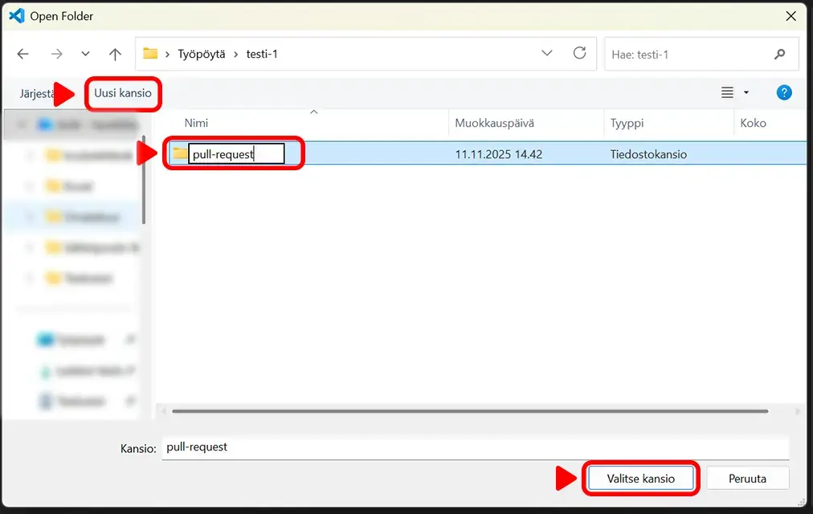
Uuden kansion luominen ja valitseminen
Jos tiedät, että kansio on luotettava (esim. oma projektisi),
valitse Yes, I trust the authors.
Jos et ole varma kansion tai projektin sisällöstä tai
luotettavuudesta, voit avata kansion “Restricted Mode” -tilassa,
jolloin mm. laajennukset ja koodin suoritus estetään.
Do you trust the authors of the files in this folder? -varoitus
Kloonaa (Clone) etärepositorio
Avaa Git Bash VS Coden terminaaliin.
Anna komento
git clone https://github.com/repositorion/url-osoite.git
ja paina Enter.
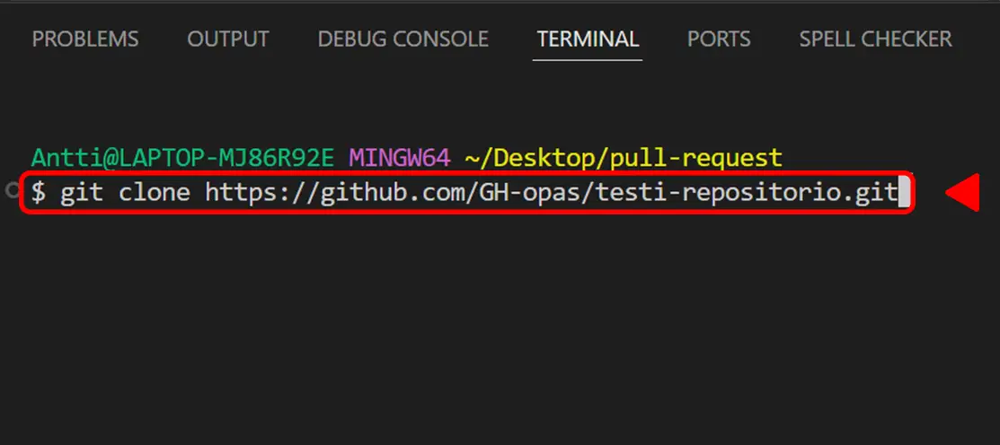
VS Coden terminaali ja kloonaus komento.
Avaa terminaali tarvittaessa yläpalkista View +
Terminal. Git Bashin saa käyttöön terminaaliin
-painikkeen vierestä avattavasta alasvetovalikosta.
Git bashin avaaminen VS Codessa
Etärepositorion tiedosto on nyt kloonattu paikalliseen kansioon.
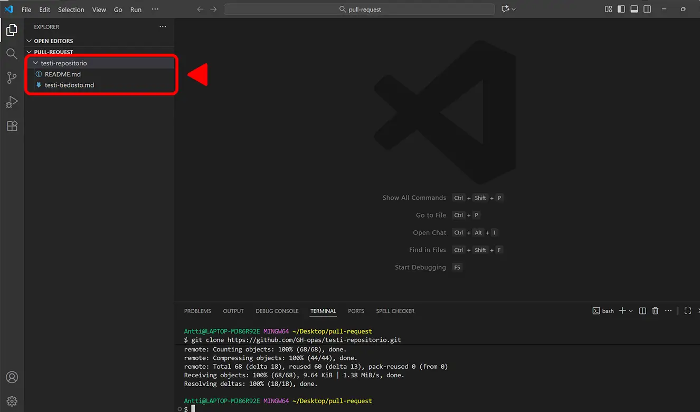
VS Coden näkymä repositorion kloonauksen jälkeen.
Luodaan repositoriolle uusi haara.
Siirry terminaalissa repositorion sisältävään kansioon komennolla
cd kansion-nimi
ja paina Enter.
Luo uusi git-haara ja siirry uuteen haaraan komennolla
git checkout -b haaran-nimi
ja paina Enter.
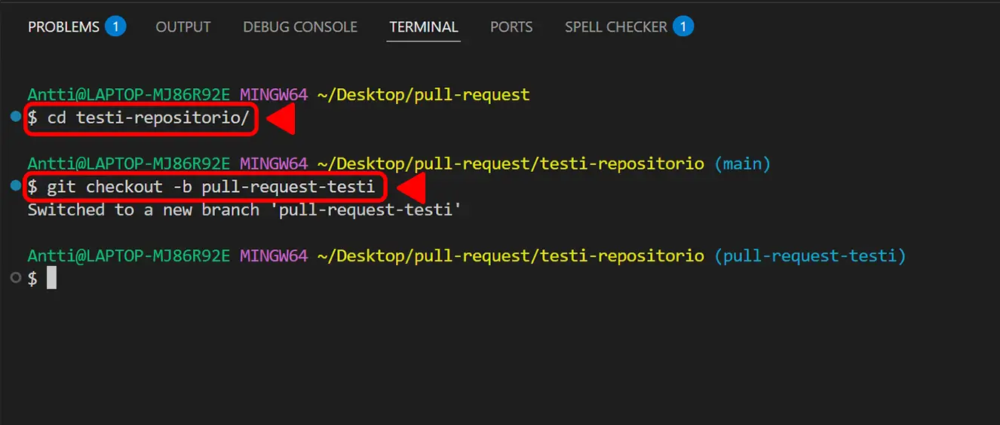
Navigointi ja uuden git-haaran luominen.
Tee haluamasi muutokset johonkin repositorion tiedostoista (esim README.md).
Tallenna muutokset CTRL +
S pikanäppäimillä.
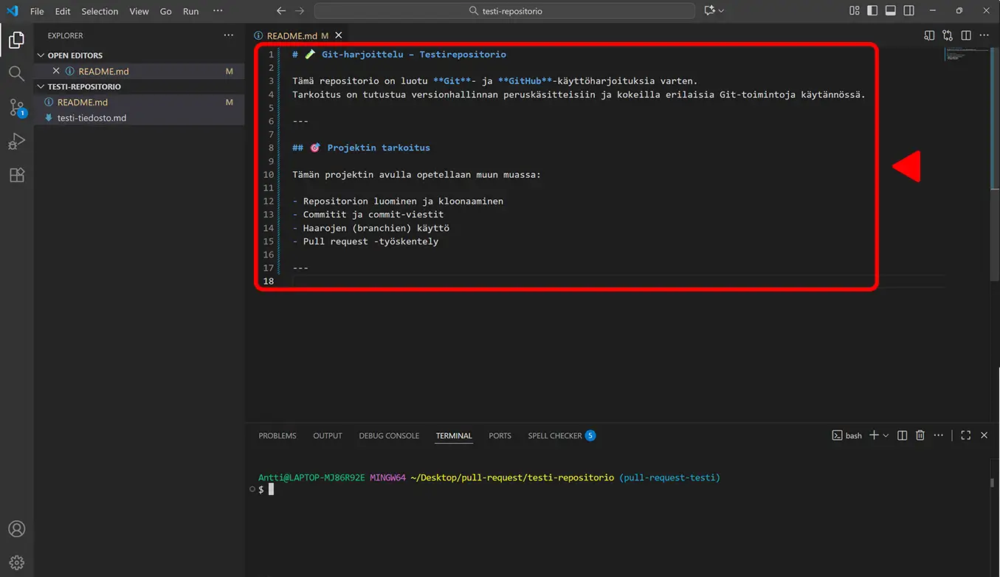
Muutoksien tekeminen README.md tiedostoon.
Vie muutokset etärepositorioon uuteen haaraan.
Lisää muutetut tiedostot välialueelle (staging) komennolla
git add .
ja paina Enter.
Commitoi muutokset komennolla
git commit -m "Kuvaava viesti muutoksista"
ja paina Enter.
Vie muutokset etärepositorioon uuteen haaraan komennolla
git push -u origin haaran-nimi
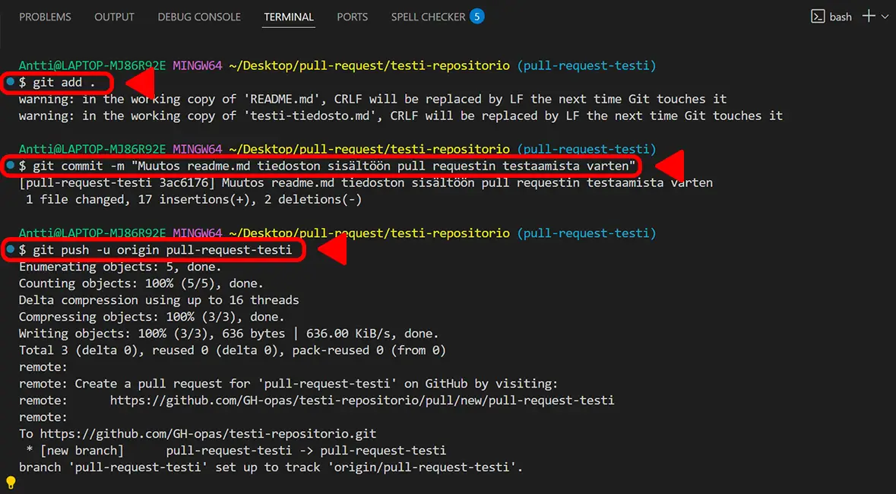
Muutoksien vieminen etärepositorioon.
Pull requestin luominen.
Pull requestin luomisen voi aloittaa usealla eri tavalla.
Esim. mene selaimella repositorion etusivulle.
Klikkaa Pull request välilehteä tai
Compare & pull request nappia.
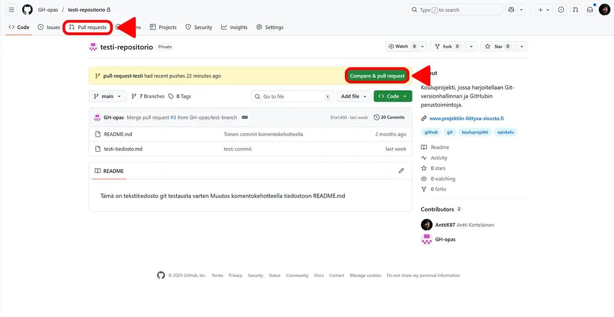
Pull request GitHubissa selaimella.
Tai klikkaamalla terminaalin linkkiä.
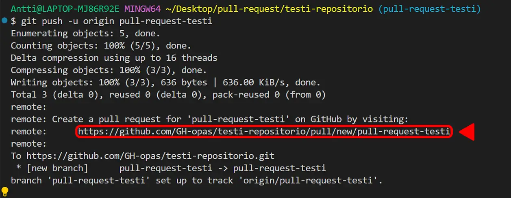
Terminaalin linkki pull requestiin.
Ohje seuraa PR:n avaamista selaimella Pull request välilehden
kautta.
Tämä siksi, että kyseinen reitti on näkyvillä varmasti aina. Esim.
Compare & pull request nappi ei jostain syystä aina tule näkyviin
GitHubin etusivulle.
Pull request välilehti.
Välilehdellä voi tarkastella avoimia PR:ä tai luoda uusia.
Uuden PR:n avaamiseen on taas kaksi mahdollisuutta klikata
Compare & pull request nappi tai
New pull request nappi.
Klikkaa New pull request nappia.
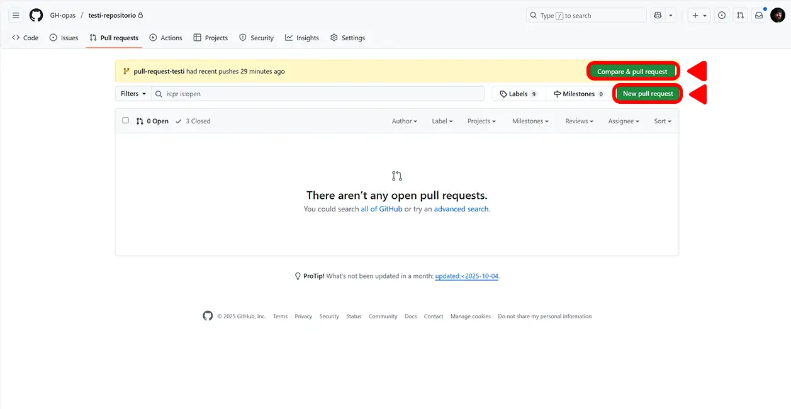
Pull request välilehti ja uuden PR:n avaaminen.
Verrattavien haarojen valitseminen
Base on haara johon PR lopulta yhdistetään eli yleensä repositorion
päähaara, joka on myös oletuksena valittuna.
Compare kohtaan valitaan nuolesta klikkaamalla avautuvasta
alasvetovalikosta se haara jota ollaan yhdistämässä.
Klikkaa alasvetovalikosta sen haaraan nimeä jonka
haluat yhdistää.
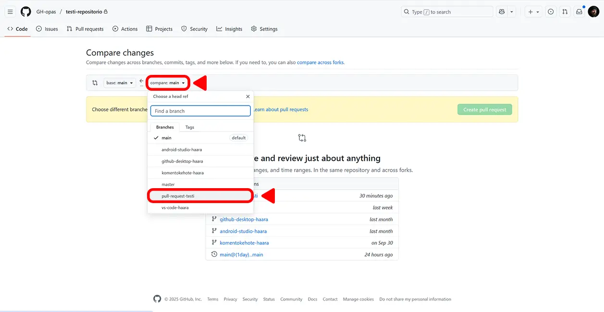
Vertailtavien git-haarojen valitseminen.
Kun oikea haara on valittu klikkaa
Create pull request nappia.
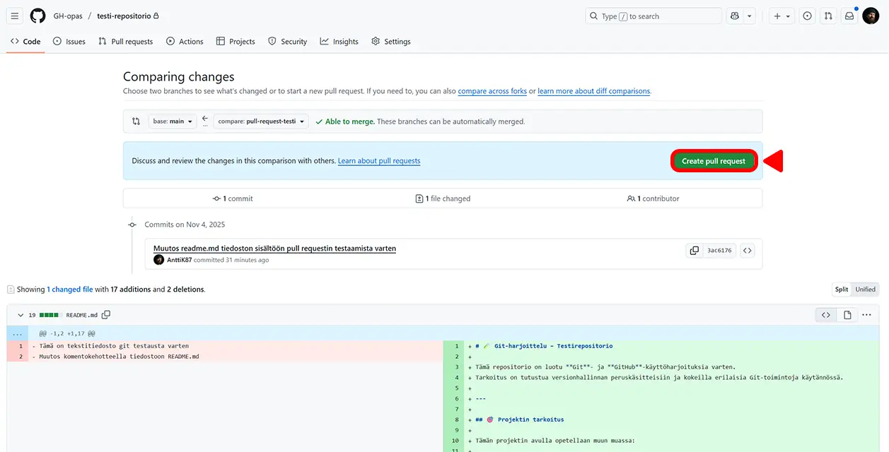
Näkymä vertailtavien git-haarojen valinnan jälkeen.
kuvauksen lisääminen pull requestille
Lisää PR:lle kuvaus Description kenttään.
Klikkaa Create pull request nappia.
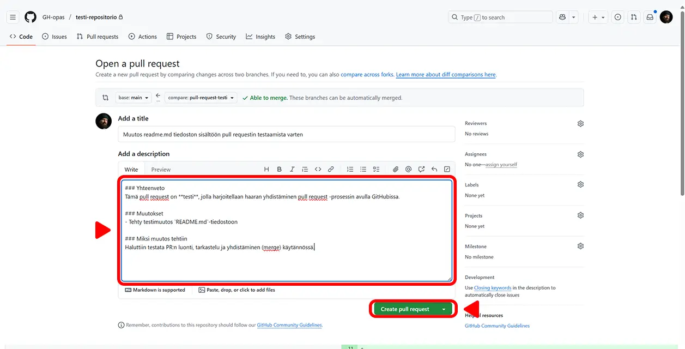
Kuvauksen lisääminen PR:lle.
Koodin katselmoijan lisääminen
Koska yksityisellä repositoriolla ei ole suojausta ja koodissa ei
havaittu konflikteja, niin PR:n luoja voisi nyt suoraan yhdistää
muutokset päähaaraan klikkaamalla
Merge pull request nappia.
Mutta erityisesti ryhmätöissä suositeltavaa on harjoitella koodin
katselmointia.
Lisätäksesi katselmoijan klikkaa oikealta Reviews tekstin vierestä
ratas kuvaketta ja valitse avautuvasta listasta
repositorion muista käyttäjistä katselmoija klikkaamalla
käyttäjän nimeä.
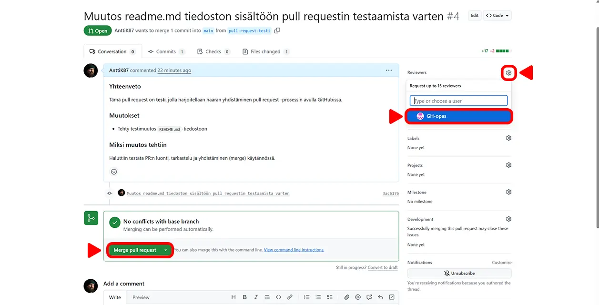
Koodin katselmoijan lisääminen PR:lle.
Koodin katselmointi
Valitulle katselmoijalle tulee ilmoitus katselmointi pyynnöstä
sähköpostiin ja GitHub-tilin viesteihin.
Katselmoinnin pääsee tekemään klikkaamalla PR:n
Files changed välilehteä.
Näkymässä voi tarkastella muutoksia.
Antaaksesi arvion kehittäjän ohjelmointityöstä klikkaa
Review changes nappia.
Anna palaute tekstikenttään.
Valitse arvion laatu valintanappien avulla.
Lopuksi klikkaa Submit review nappia.
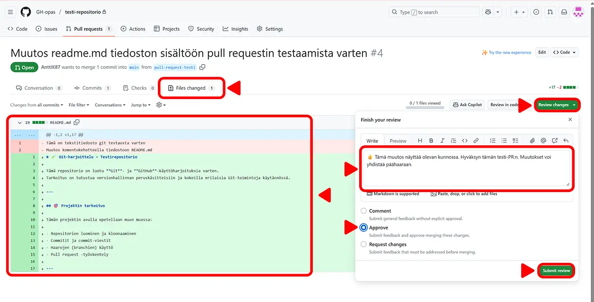
PR:n Files changed näkymä ja katselmoinnin tekeminen.
Yhdistäminen päähaaraan
Muutoksien tekijälle eli pull requestin omistajalle tulee ilmoitus
tehdystä katselmoinnista sähköpostiin ja GitHub-tilin viesteihin.
Arvio tulee näkyviin PR:n etusivulle.
Tyypillisesti pull requestin omistaja on se joka saattaa
yhdistämisen (merge) loppuun ja vie muutokset päähaaraan.
Yhdistä PR:n muutokset päähaaraan klikkaamalla
Merge pull request nappia.
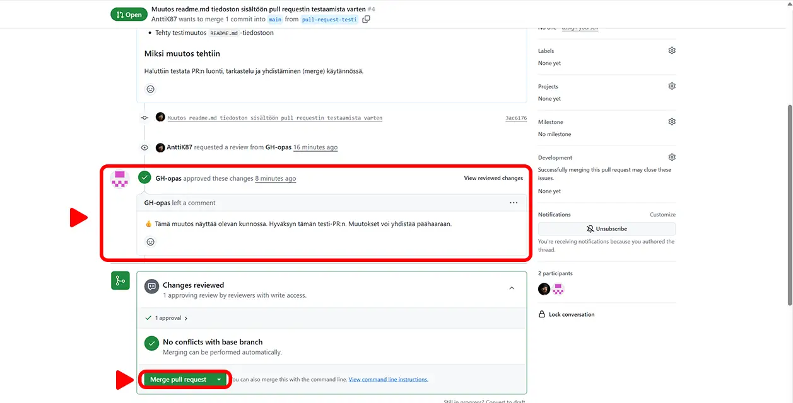
Arvion tarkastelu ja yhdistäminen.
Anna vielä commit-viesti ja tarvittaessa
tarkempi kuvaus ja klikkaa
Merge pull request nappia.
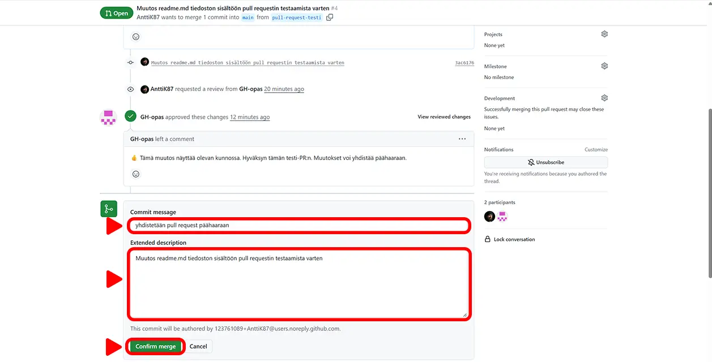
Commit-viestin lisääminen ja yhdistämisen saattaminen loppuun.
Yhdistäminen on valmis
Voit vielä poistaa yhdistetyn haaran klikkaamalla
Delete branch nappia.
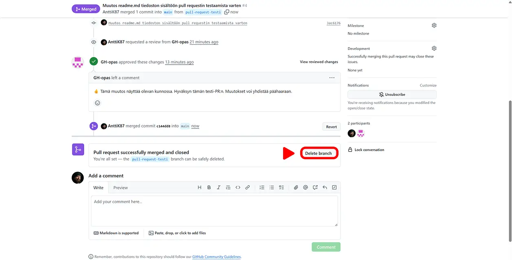
Yhdistäminen on valmis ja haaran poistaminen.
Tehdyt muutokset näkyvät nyt repositorion
päänäkymässä code välilehdellä päähaarassa.


 -painikkeen vierestä avattavasta alasvetovalikosta.
-painikkeen vierestä avattavasta alasvetovalikosta.